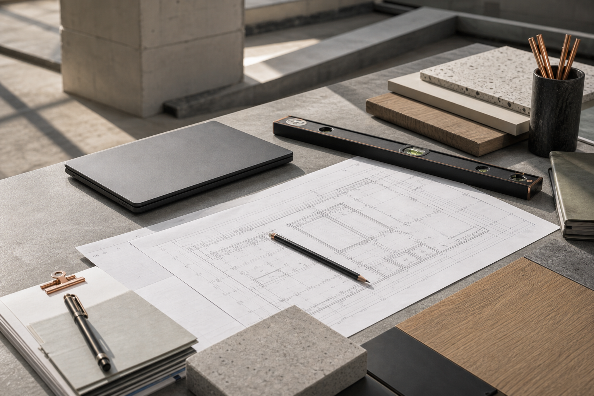
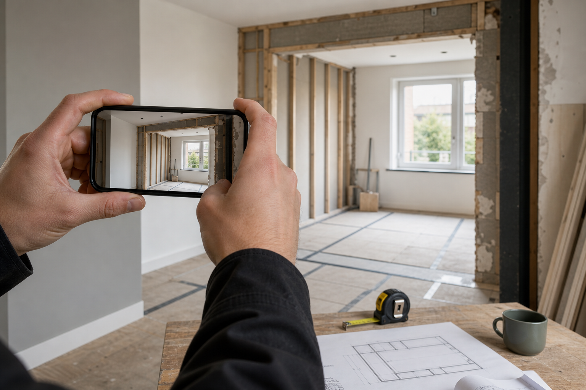
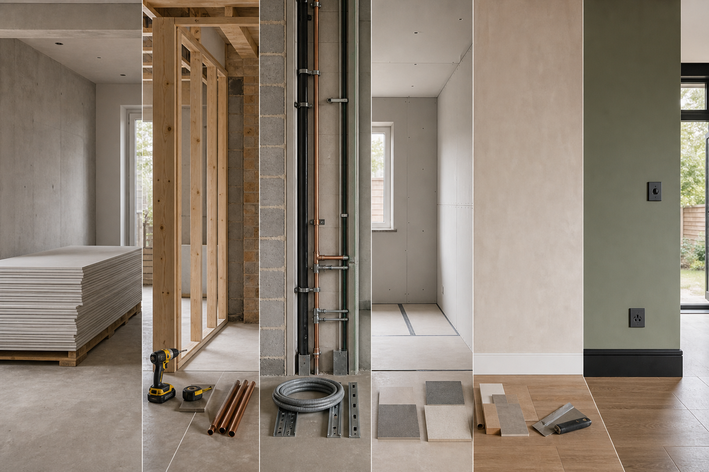
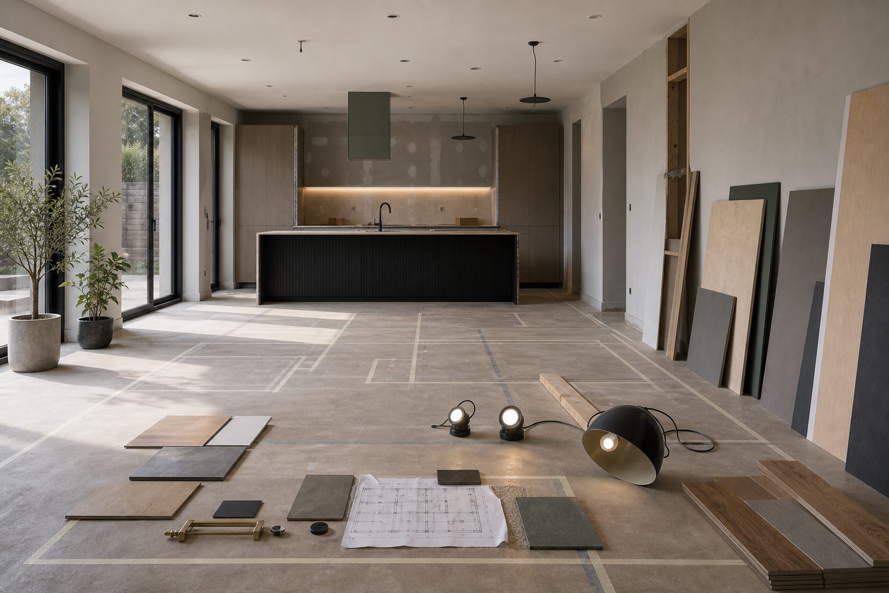

Project brief
Share the property type, service needed, timing, access, photos and the outcome you want.
Process
A clean process makes construction feel less uncertain. RS BuildPro Ltd keeps the journey easy to follow from first conversation to finish checks.
Share the property type, service needed, timing, access, photos and the outcome you want.
The work is reviewed around constraints, preparation, materials, sequencing and any installation requirements.
Stages are organised so the work can move cleanly and disruption is kept as controlled as possible.
Final details are checked against the agreed scope so the space is ready for practical use.

Good information saves time and makes the conversation more useful.

Wide and close-up photos help explain the existing space or construction issue.

Parking, working hours, property access and occupied areas can affect the best sequence.

The intended use helps guide choices around finish, strength, layout and practical detailing.